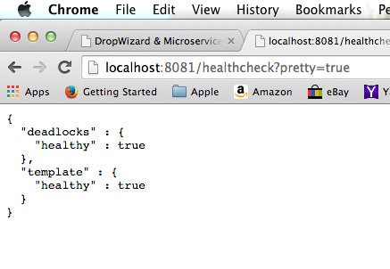

DropWizard
and Microservices
Blue Star Software July 2015 TechTalk
Nathan Pruett
What is DropWizard?
- Open source Java framework for developing RESTful web services
- Available at: dropwizard.io
Really?!? Java?!?
Yes. Really.
But don't worry...
This ain't your daddy's enterprise Java...

DropWizard Goals -
- Simple
- Opinionated
- Production Ready
DropWizard HelloWorld Walkthrough
To get started -
Create a new Maven project...
mvn -B archetype:generate
-DarchetypeGroupId=io.dropwizard.archetypes
-DarchetypeArtifactId=java-simple
-DarchetypeVersion=0.8.1
-DgroupId=com.example
-DartifactId=hello
-Dname=Hello
Pom.xml dependencies
<dependencies>
<dependency>
<groupId>io.dropwizard</groupId>
<artifactId>dropwizard-core</artifactId>
<version>${dropwizard.version}</version>
</dependency>
</dependencies>
dropwizard-core provides the following:
- Jetty - for HTTP
- Jersey (JAX-RS) - for REST
- Jackson - for JSON
- Guava & Joda Time - for convenience
- Logback & slf4j - for logging
- Metrics - for runtime metrics and health checks
- Hibernate Validator (JSR-303) - for validation
Package structure and code generated by Maven

HelloConfiguration.java
public class HelloConfiguration extends Configuration {
// TODO: implement service configuration
}
HelloApplication.java
public class HelloApplication extends Application<HelloConfiguration> {
public static void main(final String[] args) throws Exception {
new HelloApplication().run(args);
}
@Override
public void initialize(final Bootstrap<HelloConfiguration> bootstrap) {
// TODO: application initialization
}
@Override
public void run(final HelloConfiguration configuration,
final Environment environment) {
// TODO: implement application
}
}
HelloWorldResource.java
@Path("/hello-world")
@Produces(MediaType.TEXT_PLAIN)
public class HelloWorldResource {
private final AtomicLong counter;
public HelloWorldResource() {
this.counter = new AtomicLong();
}
@GET
@Timed
public Response sayHello() {
return Response.ok(
counter.incrementAndGet() + " Hello, World!"
).build();
}
}
Add to HelloApplication.run() -
final HelloWorldResource helloWorldResource = new HelloWorldResource();
environment.jersey().register(helloWorldResource);
Build...
mvn package
and Run...
java -jar target/hello-1.0-SNAPSHOT.jar server
Open in browser...
Let's add another resource...
with JSON mapping...
and configuration...
and tests...
and health checks.
Message.java
public class Message {
private long id;
@Length(min = 3)
private String content;
public Message() {}
public Message(long id, String content) {
this.id = id;
this.content = content;
}
@JsonProperty
public long getId() {
return id;
}
@JsonProperty
public String getContent() {
return content;
}
@Override
public int hashCode() {
return Objects.hashCode(id, content);
}
@Override
public boolean equals(Object o) {
if (this == o) return true;
if (o != null && o instanceof Message) {
Message other = (Message)o;
return Objects.equal(id, other.id) &&
Objects.equal(content, other.content);
}
return false;
}
}
HelloNameResource.java
@Path("/hello")
@Produces(MediaType.APPLICATION_JSON)
public class HelloNameResource {
private final String template;
private final String defaultName;
private final AtomicLong counter;
public HelloNameResource(String template, String defaultName) {
// ...
}
@GET
@Timed
public Message sayHello(@QueryParam("name") Optional<String> name) {
final String value = String.format(template, name.or(defaultName));
return new Message(counter.incrementAndGet(), value);
}
}
Add to HelloConfiguration -
@NotEmpty
private String template;
@NotEmpty
private String defaultName = "Stranger";
@JsonProperty
public String getTemplate() {//..}
@JsonProperty
public void setTemplate(String template) {//..}
@JsonProperty
public String getDefaultName() {//..}
@JsonProperty
public void setDefaultName(String name) {//..}
Create hello_config.yaml in src/resources...
template: Hello, %s!
defaultName: Stranger
Add to HelloApplication.run() -
final HelloNameResource helloNameResource = new HelloNameResource(
configuration.getTemplate(),
configuration.getDefaultName()
);
environment.jersey().register(helloNameResource);
Add to pom.xml -
<dependency>
<groupId>io.dropwizard</groupId>
<artifactId>dropwizard-testing</artifactId>
<version>${dropwizard.version}</version>
</dependency>
This pulls in -
- JUnit
- Mockito
- And Dropwizard specific testing classes...
Test JSON serialization/deserialization -
Create a JSON representation in test/resources/fixtures/Message.json -
{
"id": 1,
"content": "Hello, TestName"
}
Create MessageTest.java -
public class MessageTest {
private static final ObjectMapper MAPPER = Jackson.newObjectMapper();
@Test
public void serializesToJSON() throws Exception {
final Message message = new Message(1, "Hello, TestName");
final String expected = MAPPER.writeValueAsString(
MAPPER.readValue(fixture(
"fixtures/com/example/api/Message.json"),
Message.class));
assertThat(MAPPER.writeValueAsString(message)).isEqualTo(expected);
}
@Test
public void deserializesFromJSON() throws Exception {
final Message message = new Message(1, "Hello, TestName");
assertThat(MAPPER.readValue(fixture(
"fixtures/com/example/api/Message.json"),
Message.class))
.isEqualTo(message);
}
}
Test our resource class -
Create HelloNameResourceTest.java -
public class HelloNameResourceTest {
@Rule
public ResourceTestRule resources =
ResourceTestRule.builder()
.addResource(
new HelloNameResource("Hello, %s", "DefaultUser"))
.build();
@Test
public void testDefaultName() {
final Message defaultMessage =
new Message(1, "Hello, DefaultUser");
assertThat(resources.client()
.target("/hello")
.request().get(Message.class))
.isEqualTo(defaultMessage);
}
@Test
public void testSpecifiedName() {
final Message message =
new Message(1, "Hello, SpecifiedUser");
assertThat(resources.client()
.target("/hello?name=SpecifiedUser")
.request().get(Message.class))
.isEqualTo(message);
}
}
Now add a runtime HealthCheck -
Create TemplateHealthCheck.java -
public class TemplateHealthCheck extends HealthCheck {
private final String template;
public TemplateHealthCheck(String template) {
this.template = template;
}
@Override
protected Result check() throws Exception {
final String saying = String.format(template, "TEST");
if (!saying.contains("TEST")) {
return Result.unhealthy("template doesn't include a name");
}
return HealthCheck.Result.healthy();
}
}
Add to HelloApplication.run() -
final TemplateHealthCheck healthCheck =
new TemplateHealthCheck(configuration.getTemplate());
environment.healthChecks().register("template", healthCheck);
Build...
(and test...)
mvn package
and Run...
java -jar target/hello-1.0-SNAPSHOT.jar
server target/classes/hello_config.yaml
Open in browser...

And with parameters...

And our healthcheck...
dropwizard-core also offers:
- Managed objects
- Commands
- Tasks
-
____ _ _ _ | __ ) __ _ _ __ _ __ ___ _ __ ___| | | | | _ \ / _` | '_ \| '_ \ / _ \ '__/ __| | | | | |_) | (_| | | | | | | | __/ | \__ \_|_|_| |____/ \__,_|_| |_|_| |_|\___|_| |___(_|_|_)
DropWizard Modules & Bundles
"Official" modules -
- dropwizard-testing
- dropwizard-client
- dropwizard-auth
- dropwizard-forms
- dropwizard-assets
- dropwizard-jdbi
- dropwizard-hibernate
- dropwizard-migrations
- dropwizard-views-mustache
- dropwizard-views-freemarker
Third party modules -
- dropwizard-xml
- dropwizard-spring
- dropwizard-guice
- dropwizard-redis
- dropwizard-mongo
- dropwizard-jooq
- dropwizard-quartz
- dropwizard-scala
- and more at http://modules.dropwizard.io/thirdparty/
So what is DropWizard for...
"Duct Tape" projects...
- I have a couple (or more) web services to consolidate...
- I have a web service that almost does what I want...
- I have some data/a JAR library that I want to expose as a REST service...
JS SPA Backend...

- dropwizard-assets
Microservices
Microservice supportive libraries/tools:
Similar projects:
- Spring Boot - Pivotal/Spring
- JHipster - Spring Boot & AngularJS
- Wildfly Swarm - Redhat/JBoss
- QBit - Queue based
THE END
- Presentation built using Reveal.js
- Hosted in a DropWizard instance using the dropwizard-assets module
- Source available at:github.com/nepruett/dropwizard-presentation